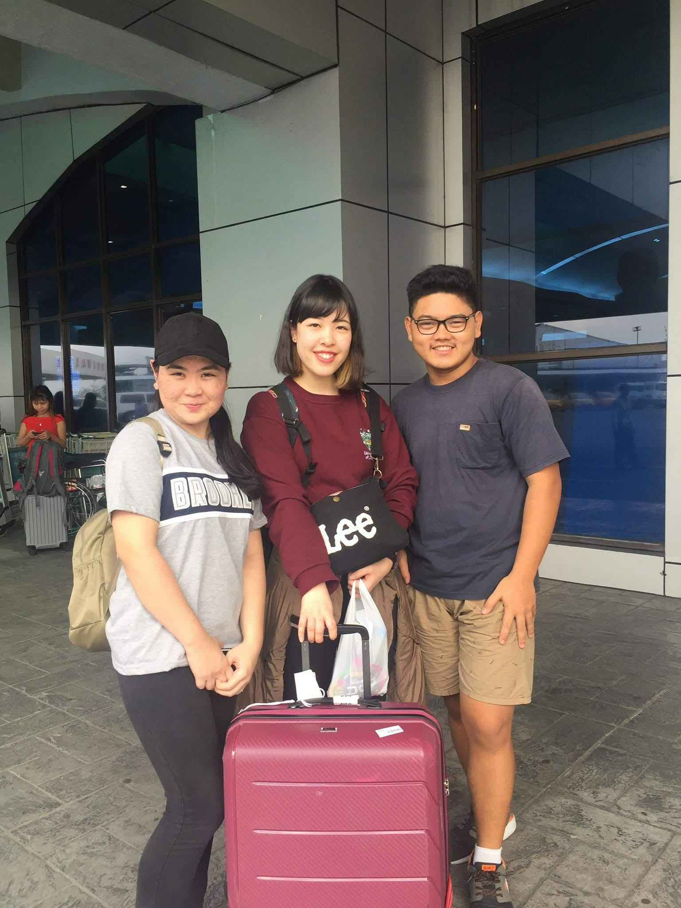
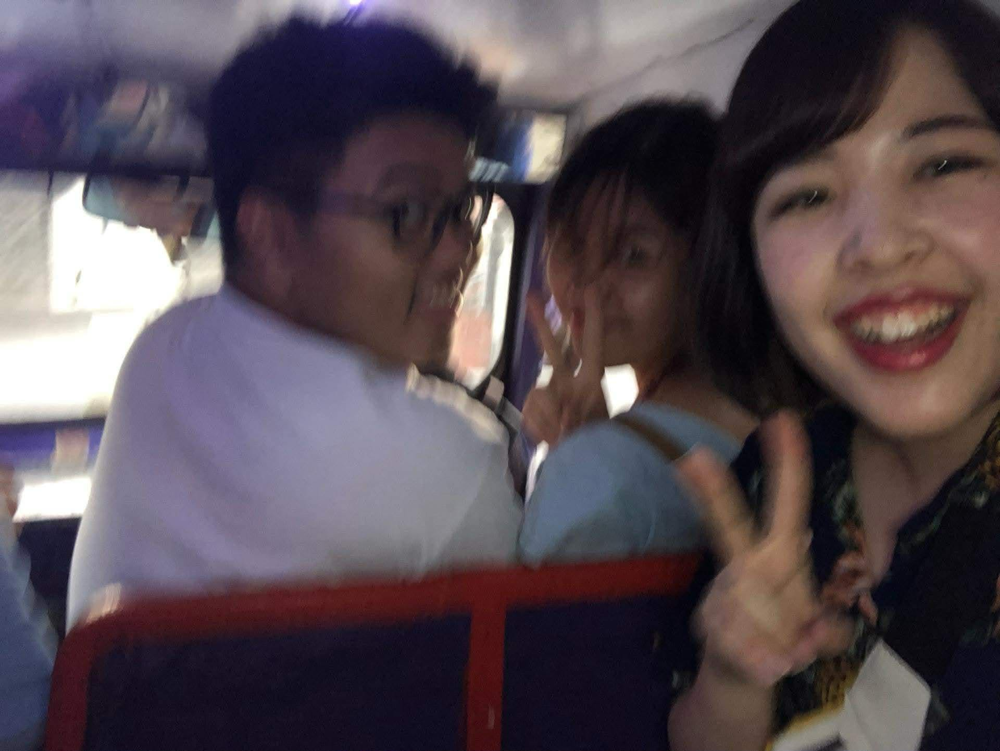
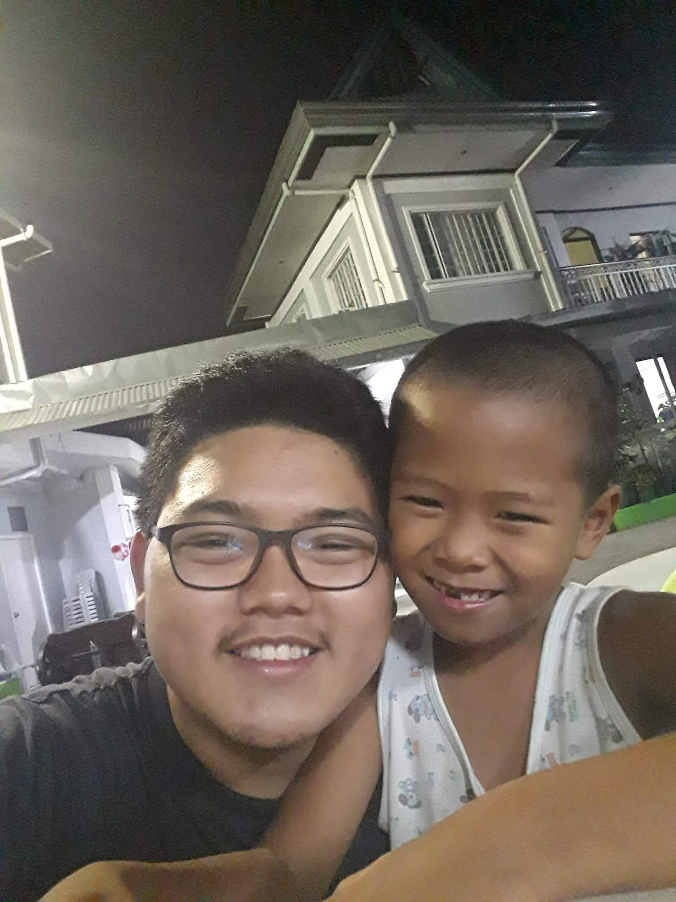

Resistance · Community & Service · Case · 2019
Supporting an Exchange Student at Children's Joy Foundation
A volunteer experience that combined cross-cultural support with practical service: assisting a Japanese exchange student with her chosen SDG activity at Children's Joy Foundation while also helping with the day-to-day logistics of the children's home.
Engagement record
The experience at a glance.
- Organization
- Children's Joy Foundation
- Engagement
- Volunteer service supporting an exchange student's SDG-focused activity
- Period
- August–November 2019
- Role
- Volunteer and exchange-student support
- Context
- Cross-cultural volunteer activity with a Japanese exchange student
- Contribution
- Participant assistance and logistical support for the children's home
- Focus
- Service, coordination, cross-cultural learning, and practical support
Service across cultures
Supporting someone else's project also meant learning how service works behind the scenes.
From August to November 2019, I volunteered at Children's Joy Foundation while assisting a Japanese exchange student with the activity she chose to pursue around the Sustainable Development Goals. My role was partly to help her navigate the experience and partly to contribute wherever practical support was needed.
That made the engagement more than accompaniment. I also helped with logistics at the children's home, which exposed me to the quieter operational work that allows a service organization to function day to day.
Documentary record
From arrival to volunteer work.
Photographs from the exchange-student support and volunteer experience.



The logistics behind care
Service became easier to understand when I could see the systems supporting it.
One detail that stayed with me was learning that some doughnut franchises donated food to the children's home. It made visible how everyday institutional relationships can become part of a wider support system.
The experience showed that service is not only the visible interaction with beneficiaries. It also depends on transport, supplies, food, coordination, and the network of people and organizations that keep those resources moving.
What I carried forward
Helping another volunteer opened a wider view of what support can mean.
My initial responsibility was to assist an exchange student. In practice, that meant becoming part of the environment around her project and contributing where the work required it.
The experience made service feel less like a single act and more like a chain of support: one person helping another participate, an organization coordinating daily needs, and outside partners contributing resources that make the work more sustainable.
Community & Service
Return to the community record.
Explore the experiences where empathy, coordination, access, and shared responsibility became practical forms of service.
Community & Service →